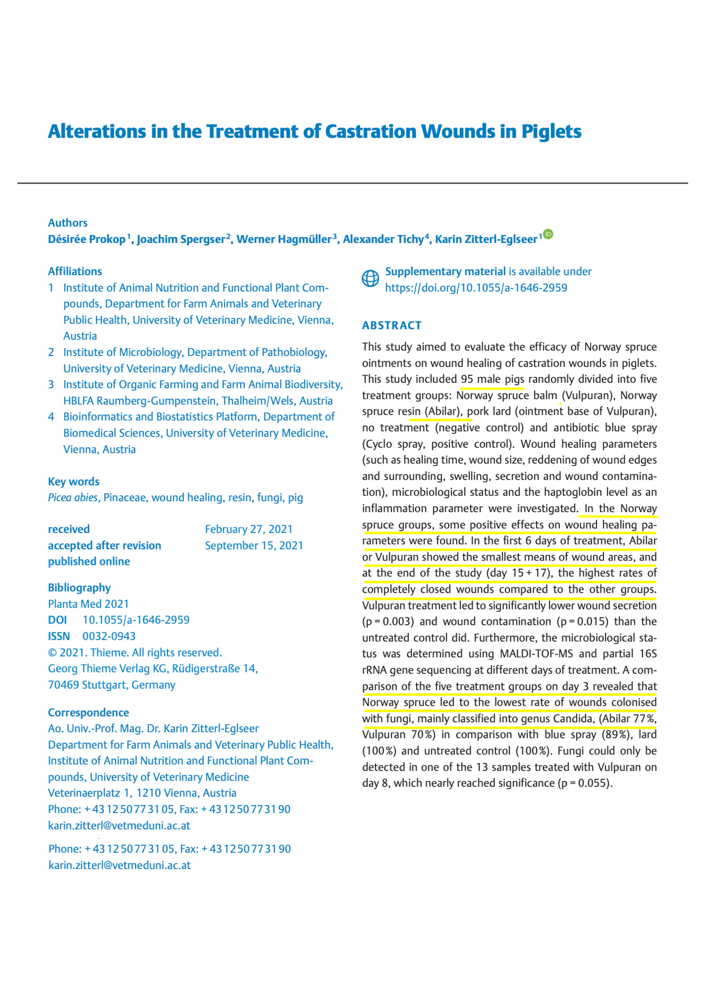

Study 1 — Piglet Wounds
A study involving 95 male piglets evaluated the efficacy of Norway spruce ointments on castration wounds as a relevant model for human skin healing. Participants were randomly assigned to five groups (n=19 per group): Abilar 10% resin salve, Vulpuran (20% spruce balm), pork lard (placebo), antibiotic blue spray (positive control), or no treatment (negative control). Following surgical castration at age 3 weeks, 0.5 mL of the assigned product was applied topically to two scrotal incisions on days 1, 2, 3, 4, 5, 8, and 9. Researchers used digital planimetry to analyse 647 photographs of the wounds over 17 days, measuring area, closure rates, inflammatory markers (haptoglobin), and microbiological status.
Key Findings
At the end of the study (days 15–17), the highest rates of completely closed wounds were observed in the Abilar (8.95%) and Vulpuran (6.84%) groups, compared to no treatment (6.32%), antibiotic spray (4.74%), and pork lard (3.16%). During the first 6 days, the spruce-treated groups also showed the smallest mean wound areas. Microbiological analysis on day 3 revealed that spruce-based treatments led to the lowest rates of fungal colonization (Abilar 77%, Vulpuran 70%) compared to the antibiotic spray (89%) and untreated controls (100%). Additionally, spruce balm treatment resulted in significantly lower wound secretion and contamination than no treatment, and significantly less swelling and reddening than the ointment base (lard) alone.

Download
Download PDFReference
Prokop D, Spergser J, Hagmüller W, Tichy A, Zitterl-Eglseer K. Efficacy of Norway spruce ointments and bacterial and fungal alterations in the treatment of castration wounds in piglets. Planta Med. 2022 Mar 1;88(3–4):300–12. doi:10.1055/a-1646-2959
Back to study